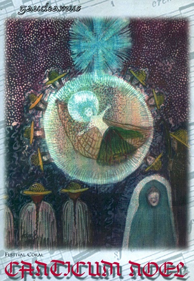

Published on October 15, 2011
25 years, 1987 – 2012
by Guntars Gedulis, conductor and composer
The Gaudeamus Venezuelan Singing Society was founded in Caracas in January 1987 and, while centering its activities there, organizes events throughout the country. Gaudeamus is dedicated to the training of Venezuelan singers through artistic and educational programs. Its members include vocal groups and solo artists, choral singers, conductors, music teachers and persons in related fields.
In addition to educational programs, including the Irene Ebersteins vocal workshop (named after the renowned pedagogue and Gaudeamus vocal teacher of many years), the Society offers the “Cantamus” choral program for singing groups of different types: its choirs have performed in many Venezuelan cities as well as in Trinidad and Tobago, Colombia, the US, Latvia, and other Baltic countries. Since 1991, its “Venezuela gira” international cultural exchange program has sponsored cultural tours for artists and choirs from Latin America and many other nations, including the US (The Buffalo Guitar Quartet, the Rutgers University Kirkpatrick Choir, Church of the Advent Choir, Jubilee Singers, Des Moines Children´s Choir, and Synergy!!), Latvia (Mantojums, Vektors Jāzeps and Mediņš Music School Boys´ Choir), and Sweden (The Sofia Vokalensemble). These groups have performed in cities from San Cristobal and Maracaibo in the Western frontier to Güiria in the extreme East. Gaudeamus has received distinguished clinicians from the choral world – Alice Parker, Albert McNeil, Juan-Tony Guzmán, Anthony Leach, Eugene Wilson, Jim Hejduk, Kathe Lyth, Luis Olivieri, Guido Minoletti, Samuel Kerr, and Thelma Chan, among many others.
Gaudeamus has organized 29 choral festivals – 16 international ‘Canticum Novum’ festivals, initiated in 1995 (currently a 14-day event), and 13 week-long ‘Canticum Noel’ Christmas festivals, begun in 1998. ‘Canticum Novum’ alone has received a total of 10,000 singers since its inception. Both festivals are based in the heart of the Caracas cultural area, comprised of the Teresa Carreño Theater, the museums of Contemporary Art and Fine Arts, UNEARTE (the Universidad Nacional Experimental de las Artes), the nearby Central University of Venezuela, and local churches, but also offer programming in other parts of the city and the interior of the country: Villa de Cura, Puerto Ordáz, Coro, San Felipe, Puerto la Cruz, Cumaná and other towns. The next ‘Canticum Novum’ is scheduled for October 13-28, 2012: October 13-14 for a gathering of men’s and women’s choirs; October 16-21 for children’s and youth choirs; October 21–28 for mixed choirs. Gaudeamus also invites choirs to participate in the next ‘Canticum Noel’, December 10–18, 2011.
During its 25 years of activity, Gaudeamus has produced many events within its ‘Canto de América’ program: the production ‘Reynaldo discovers Christmas’, the musical event “Song of América”, concerts in honor of Simon Bolívar, café concerts, lyric recitals, and a vocal competition. Gaudeamus also supports vocal soloists, choral singers, conductors and music teachers with advisory programs and through its Irene Ebersteins music library of publications, scores and recordings. It has also begun to publish music through ‘Editio Musicae’.
In 1997, Gaudeamus’ choral programming received the prestigious National Award (Premio Nacional) from the House of Artists (Casa del Artista) by a unanimous decision of the jury.
The 25th anniversary of Gaudeamus will be celebrated with a concert cycle in Caracas from March 10–18, 2012. Gaudeamus will observe the 40th anniversary of artistic activity of its founding director, Guntars Gedulis, through the study, recording and presentation of his musical works from September 2011 through September 2012. Choirs and artists are invited to participate in these programs. Please write to gaudeamusvenezuela@gmail.com and consult www.gaudeamusvenezuela.com.
Gaudeamus receives a subsidy from the National Institute of the Performing and Musical Arts (IAEM)-Venezuelan Ministry of Culture. However, it is important to mention that its varied programming has been possible only due to the collaboration of many organizations, both national and international, as well as that of individual supporters.
Original from International Choral Bulletin